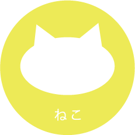
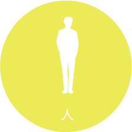
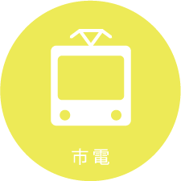

ねこしでん
函館市電の新しいアイデア。
- 現代人はなかなか自分をいたわる時間を取ることができない。
移動時間を気軽に癒される時間に変えてくれる。
それがねこしでん。移動の時間を移動だけで終わらせない。
移動以外の付加価値を市電に。何気ない時間を癒しの時間に。
- 外装
- 目を引くインパクトのあるデザイン

- 〇ネコが大きくプリントされた車体
- 通りすがりの人が思わず見てしまうインパクト。
- 〇まるい複数の窓
- 窓から覗くネコを外から見ることができる。
- 内装
- まるで家！くつろげるゆったり空間

- 〇もこもこの床と壁
- 肌ざわりのやさしいもこもこの空間。
- 〇靴入れ
- 靴は脱いで靴箱へ。部屋のようにくつろげる。
- 〇キャットタワー
- 楽しく遊ぶネコを眺める。
- 〇自動販売機
- おもちゃやおやつを買って、ネコともっと触れ合える。

- 里親が見つかる
- 多くの人の身近にある市電が里親探しの場になることで、里親が見つかりやすくなる。

- 癒しの時間を得られる
- 市電での移動時間に気軽にネコと触れ合う癒しの時間を得られる。

- 利用者の増加が期待できる
- ネコのいる市電を提供することで、普段市電に乗らない人にも市電を利用してもらえる可能性が増える。
- この作品は、ユーザ・センタード・デザインという授業で制作しました。
この授業で、"函館市電の新しい形を提案する"という課題が出され、グループごとに制作しました。
- 函館市電のフィールドワーク
- アイデアを出し合う
- イベント電車にアイデアの対象をしぼる
- イベントというアイデアを元に、"ねこしでん"の提案
- 模型の制作、アイデアのまとめ
- 中間発表
- 中間発表で得たフィードバックを元にアイデアの改善
- 完成
- 今回この作品を制作し、〇〇という成果を得ることができた。